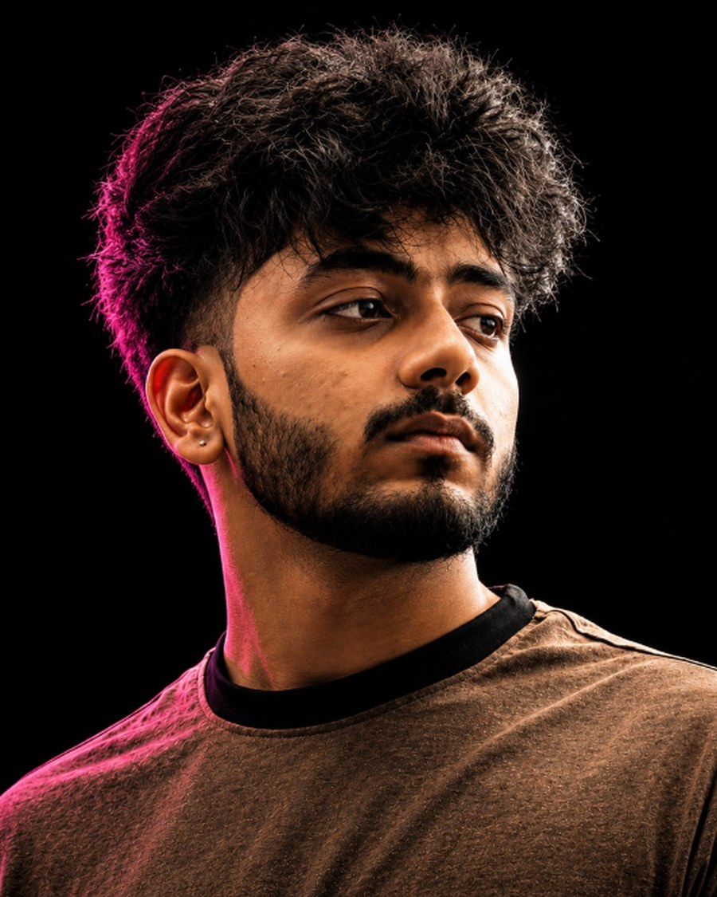

01 / BUILDER↗
FOUNDER
OPAI
Exploring how intelligent software can help people work, learn, and execute.
Explore OPAI ↗TIRU VENKATESH — 2026
I build AI-powered products, explore intelligent systems, and share the journey from idea to implementation.

01 / ABOUT
THE PERSON BEHIND THE BUILD
A builder, first.
I'm Tiru Venkatesh — a Computer Science student, AI-focused developer, product builder, and the person behind Tiru Builds and @lockintiru.
I like understanding how systems work, experimenting with new technologies, and turning ideas into usable applications. My work spans AI-powered products, full-stack engineering, computer vision projects, and intelligent workflows.
Through OPAI, my projects, and content, I'm learning in public and sharing the work behind the finished product — including the messy parts.
A little more about my journeyFOUNDER
Exploring how intelligent software can help people work, learn, and execute.
Explore OPAI ↗ENGINEER
From interfaces and APIs to LLM integrations and intelligent workflows.
My toolkit ↗CREATOR
Sharing experiments, lessons, builds, and the progress between releases.
Follow the journey ↗PHILOSOPHY
Learn deeply, build carefully, test honestly, and improve continuously.
02 / SKILLS
TOOLS ARE ONLY THE BEGINNING
Technologies I use, learn, and explore to turn ideas into real software. My focus is on understanding the system — not collecting logos.
Building a strong base in programming and problem solving.
Responsive interfaces and product experiences.
APIs, application logic, and service integration.
Exploring the systems behind useful AI applications — from retrieval to agent workflows.
Version control, deployment, and project iteration.
* My experience varies by technology. The goal is to keep learning and prove skills through working projects.
03 / SELECTED WORK
IDEAS MADE TANGIBLE
A selection of products, experiments, and engineering projects. Each one is part of the learning process.
YOUR OPERATING AGENT
An AI-focused operating agent and workspace exploring intelligent assistance, workflows, and AI-powered product experiences.
An intelligent video analytics project exploring detection, tracking, intrusion alerts, and virtual fencing.
A broader AI engineering direction exploring intelligent workflows, inference systems, and AI-powered engineering experiences.
An AI-assisted civic platform concept focused on complaint analysis, prioritization, duplicate detection, and routing.
MORE EXPERIMENTS
Smaller builds, hackathon explorations, and prototypes also live on GitHub.
04 / JOURNEY
BUILT THROUGH DOING
Every project adds a new question. Every bug leaves a lesson. The goal is to keep moving with intention.
Connect on LinkedIn ↗THE FOUNDATIONS
Developing programming and web development fundamentals through hands-on projects and experiments.
PRODUCT EXPLORATION
Building full-stack applications and exploring how design, APIs, and product thinking come together.
AI ENGINEERING
Exploring LLMs, retrieval, agents, and the engineering behind useful AI experiences.
HACKATHONS & OPEN SOURCE
Participating in technical challenges, collaborating with teammates, and exploring open-source projects.
NOW
Continuing to develop products while documenting the journey through Tiru Builds and @lockintiru.
RECOGNITION
Virtual Challenge 3 — Google for Developers × H2S. Include certificate link when available.
HACKATHON
Civic-IQ team result: Top 101 / Rank 91, as reported by the team.
CREDENTIAL
Google Cloud Asia Pacific credential.
05 / BUILD IN PUBLIC
JOURNEY IN PROGRESS@lockintiru
I'm building more than software. I'm documenting the process — experiments, lessons, failures, ideas, and the progress that happens between releases.
The audience is still growing. The commitment to creating and improving is what matters.
Follow the journey ↗06 / VISION
LOOKING FORWARD
THE LONG GAME
“The vision is ambitious. The work starts with what I can build today.”
I'm interested in the intersection of AI, software, and systems that help people create, understand, and execute. Through OPAI and future projects, I want to explore how intelligent systems can move beyond answering questions toward helping people complete meaningful work.
07 / CONTACT
LET'S BUILD TOGETHER
Have an idea, a project, or an opportunity to collaborate? I'm open to thoughtful conversations around AI engineering, product development, hackathons, and open source.
tiruvenkatesh123@gmail.com ↗